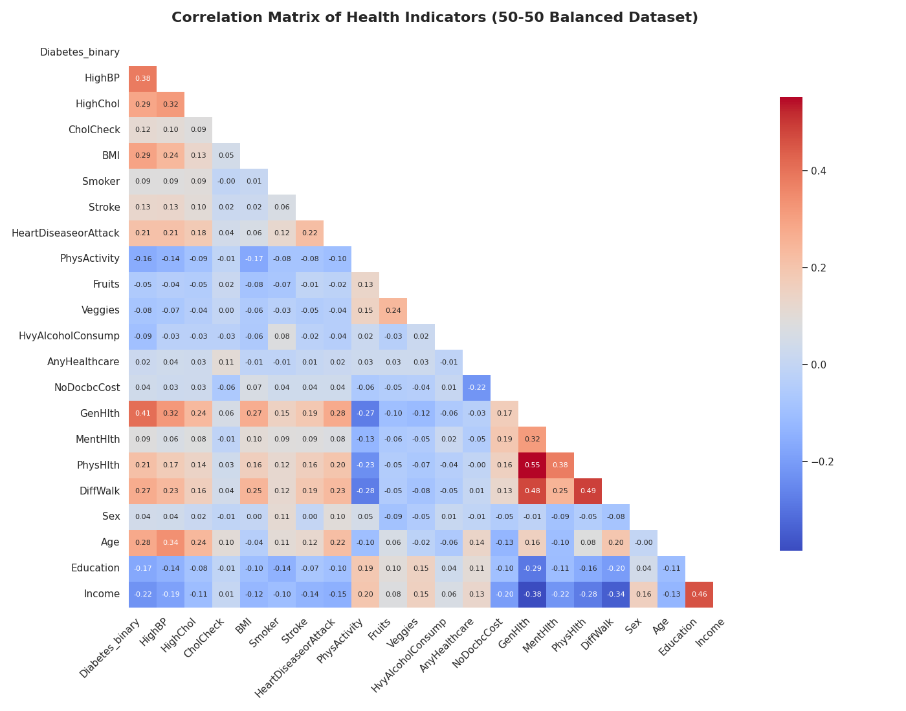
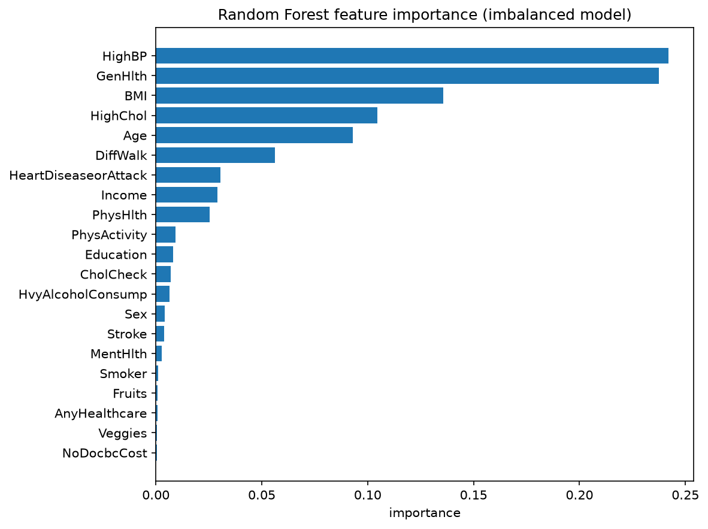
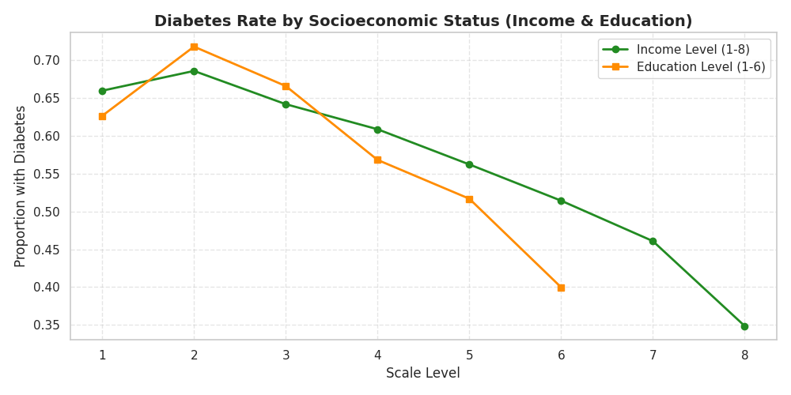

CDC BRFSS 2015 · Supervised Screening Model
A screening tool that estimates diabetes risk from 21 health, lifestyle, and demographic indicators, tuned to catch true cases rather than to be accurate on average — and audited for who it under- and over-serves along the way.
01 · Project Overview
The CDC's Behavioral Risk Factor Surveillance System (BRFSS) is an annual telephone survey of U.S. adults on health behaviors and chronic conditions. Its 2015 wave includes 253,680 respondents and 21 health, lifestyle, and demographic indicators alongside a diabetes diagnosis label. We used this dataset to explore a question with real screening value: can a small set of self-reported indicators — blood pressure, cholesterol, BMI, general health, income, and similar — flag people who are likely undiagnosed or at risk for diabetes?
The project moved through four phases. We started with exploratory data analysis and a demographic bias audit, checking data quality and how diabetes prevalence varies by sex, age, education, and income before any modeling began. From there we ran a systematic comparison of three algorithms — Logistic Regression, Random Forest, and XGBoost — across both the raw, real-world-imbalanced data and an artificially balanced version, scoring on recall rather than accuracy. That comparison surfaced the project's central tension: on realistically imbalanced data, precision collapsed to roughly 30% even though recall stayed strong. We addressed that with class weighting and explicit decision-threshold tuning, then closed the loop by deploying the final model behind a Streamlit app with a per-prediction SHAP explanation, containerized with Docker.
scale_pos_weight class weighting and a threshold sweep, landing on τ = 0.30 to prioritize recall.02 · Data & Exploratory Analysis
The dataset ships pre-cleaned — zero missing values across all 253,680 rows — but is heavily imbalanced: only 13.9% of respondents report a diabetes or prediabetes diagnosis. We worked with two versions throughout: the full imbalanced set, and a 50/50-balanced subsample (70,692 rows) used to check how much that imbalance was distorting our metrics.

| Indicator | r |
|---|---|
| General health rating | 0.294 |
| High blood pressure | 0.263 |
| Difficulty walking | 0.218 |
| BMI | 0.217 |
| High cholesterol | 0.200 |
| Indicator | r |
|---|---|
| Income level | −0.164 |
| Education level | −0.124 |
| Physical activity | −0.118 |
| Heavy alcohol use* | −0.057 |
| Vegetable intake | −0.057 |
*Likely a confound (younger, healthier respondents drink more) rather than a protective effect — flagged as a sanity-check finding, not a causal claim.
03 · Algorithm
This is a supervised, binary classification problem: given a respondent's health profile, predict whether they have diabetes or prediabetes. We compared three algorithms head-to-head — Logistic Regression, Random Forest, and XGBoost — each wrapped in a scaling pipeline and grid-searched with 5-fold stratified cross-validation, scored on recall rather than accuracy, since a missed diabetic (a false negative) is the costlier error in a screening context.
Inputs: 21 features — binary conditions and lifestyle flags (high blood pressure, high cholesterol, smoking, physical activity, diet, healthcare access), ordinal ratings (general health, age bracket, education, income), and continuous measures (BMI, days of poor physical/mental health). Output: a predicted probability of diabetes/prediabetes, thresholded to a binary flag at inference time.
| Dataset | Model | Accuracy | Recall | Precision | F1 | ROC AUC |
|---|---|---|---|---|---|---|
| Balanced 50/50 | Logistic Regression | 0.746 | 0.764 | 0.737 | 0.750 | 0.823 |
| Balanced 50/50 | Random Forest | 0.749 | 0.794 | 0.728 | 0.760 | 0.826 |
| Balanced 50/50 | XGBoost | 0.752 | 0.799 | 0.730 | 0.763 | 0.830 |
| Imbalanced | Logistic Regression | 0.732 | 0.761 | 0.311 | 0.441 | 0.820 |
| Imbalanced | Random Forest | 0.719 | 0.779 | 0.303 | 0.436 | 0.820 |
| Imbalanced | XGBoost | 0.724 | 0.785 | 0.308 | 0.442 | 0.826 |
Highlighted row: best ROC AUC of the six runs, and the family (XGBoost) we carried forward to deployment.
scale_pos_weight handles class imbalance natively, without discarding dataTreeExplainer, so predictions stay explainable
04 · Model Evaluation
A 0.50 cutoff is the default, not a decision. We swept the deployed XGBoost model's threshold from 0.50 down to 0.30 and tracked how recall and precision moved against each other. Lower thresholds flag more people as at-risk — recall climbs, precision falls.
Fig. 4 — Threshold sweep on the held-out test set (imbalanced data, XGBoost). We deployed τ = 0.30: 92% recall at 24% precision, deliberately over-flagging rather than under-flagging.
We chose τ = 0.30 because a screening tool's job is to prompt a conversation with a provider, not to diagnose — a false positive costs a follow-up question; a false negative costs a missed case. That said, at this threshold roughly 3 in 4 positive flags are false alarms. The app is built around that honestly: it reports a probability and an explanation, not a yes/no diagnosis, and says so explicitly on screen.
05 · Demo
The deployed Streamlit app collects a health profile through a sidebar form, runs it through the exported XGBoost model, and returns a probability alongside a SHAP waterfall chart showing which inputs pushed the estimate up or down — so the output is a set of reasons, not just a number.
Illustrative mock-up of the app's two flag states, not a live screenshot — try the real thing here.
06 · Impact & Bias
A free, low-friction screening step could reach people who face real barriers to care — in our own data, respondents who reported skipping a doctor visit due to cost still had a measurable diabetes signal in the other 20 features. Recall-first tuning and an explainable output (not a black-box score) are both deliberate choices to make the tool useful as a prompt to seek care, not a replacement for it.
At τ = 0.30, about 3 of every 4 positive flags are false alarms — deployed carelessly, that's alarm fatigue, unnecessary anxiety, and unnecessary healthcare-system load. A probability score can also be misread as a diagnosis, and self-reported survey data trained models risk quietly encoding whatever biases already exist in who gets diagnosed and who gets to answer a phone survey in the first place.

It does both, and the direction depends on choices we made, not on the algorithm itself. Income and education are among the strongest predictors in the model — which means the model is partly learning a socioeconomic pattern, not a purely biological one. BRFSS is also a telephone survey, which structurally under-reaches people without stable phone access — often the same lower-income households the data shows as higher-risk. Deployed without care, a tool like this can reinforce the idea that under-resourced groups are simply "higher risk," without surfacing why, and without ever checking whether it performs equally well across those groups. We did not evaluate recall or precision per subgroup — only in aggregate — which is a real limitation of this project, not a solved problem.
On the mitigation side, choosing to optimize for recall over accuracy was itself a bias-aware decision: an accuracy-first model looks better on paper but systematically under-catches the minority (diabetic) class, which historically correlates with the same under-resourced groups. Pairing that with SHAP explanations means the tool never just says "high risk" — it says why, which gives a person or a clinician something to question rather than something to simply accept. Neither of these fixes the upstream sampling and self-report issues baked into the data itself; they only change how responsibly the model built on top of that data behaves.
07 · Citations & Data Source
Add your group's remaining sources here — CDC diabetes statistics, any papers discussed in team meetings, etc. — to round out the citation count.
08 · Next Steps
scale_pos_weight approach to see whether it changes the precision/recall trade-off at deployment.